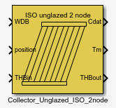
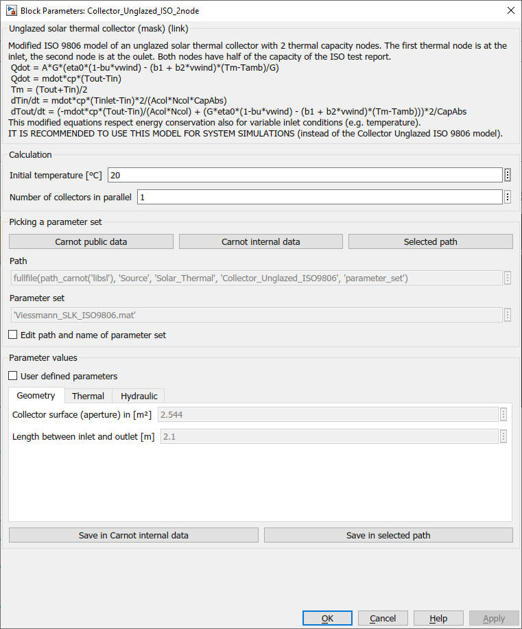
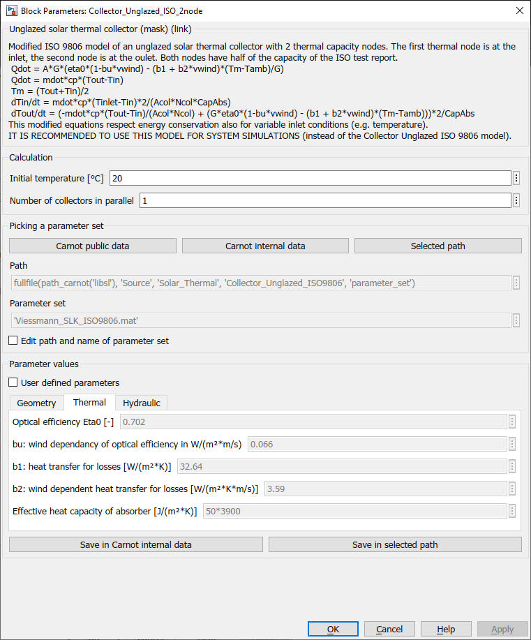
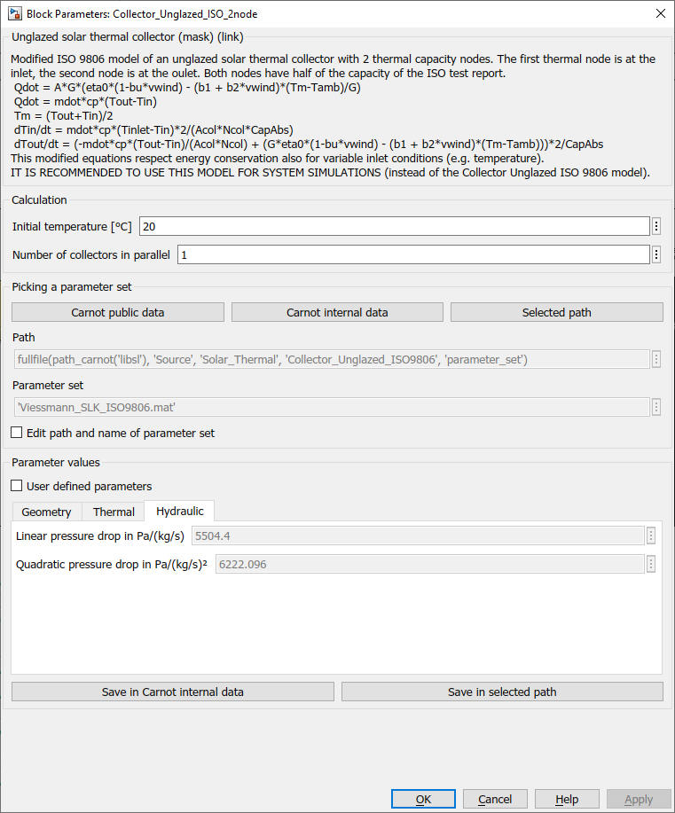

Collector_unglazed_ISO_2node
Path: CARNOT/Source/Solar_Thermal
Purpose
Model
for an unglazed solar thermal collectors.
Description
The model is based an modified ISO 9806 equations of an unglazed solar thermal collector with 2 thermal capacity nodes.
Qdot = A*G*(eta0*(1-bu*vwind) - (b1 + b2*vwind)*(Tm-Tamb)/G)
Qdot = mdot*cp*(Tout-Tin)
Tm = (Tout+Tin)/2
The first thermal node is at the inlet, the second node is at the oulet. Both nodes have half of the capacity of the ISO test report.
dTin/dt = mdot*cp*(Tinlet-Tin)*2/(Acol*Ncol*CapAbs)
dTout/dt = (-mdot*cp*(Tout-Tin)/(Acol*Ncol) + (G*eta0*(1-bu*vwind) - (b1 + b2*vwind)*(Tm-Tamb)))*2/CapAbs
This modified equations respect energy conservation also for variable inlet conditions (e.g. temperature).
IT IS RECOMMENDED TO USE THIS MODEL FOR SYSTEM SIMULATIONS instead of the
Collector Unglazed ISO 9806 model.
Use the
ISO 9806 model only for the purpose of the ISO (e.g. data fitting).
Static pressure is calculated if necessary, i.e. for thermosyphon systems.
Inputs:
Outputs:
Parameters



Literature
ISO 9806 - Solar thermal collectors
Characteristics
Direct Feedthrough Yes
Sample
time
Inherited
from driving block
Vectorized
No